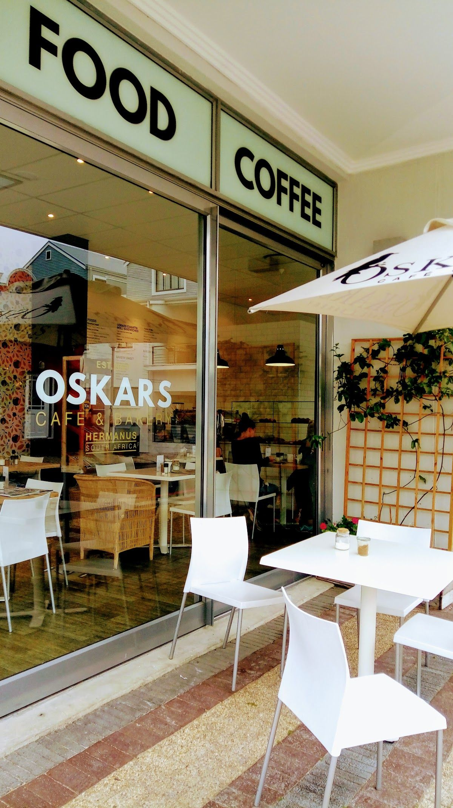
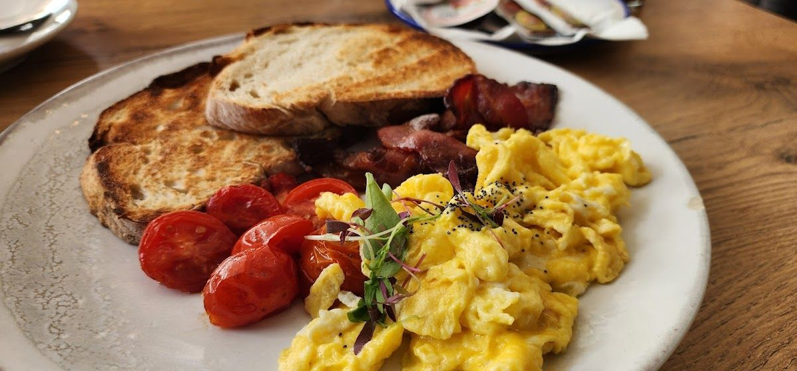
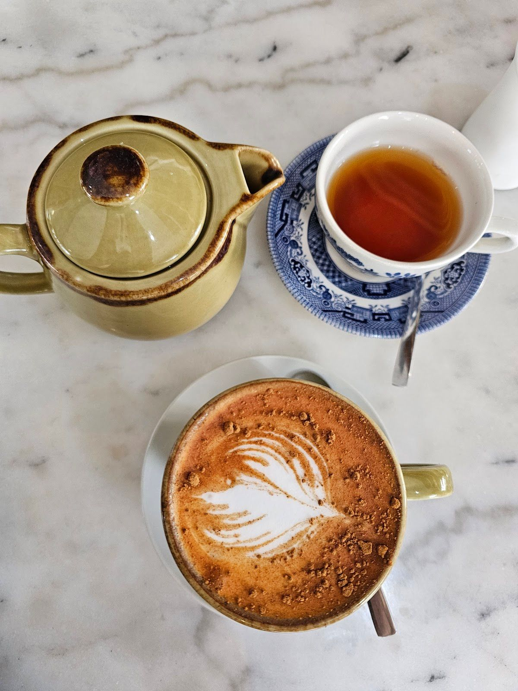
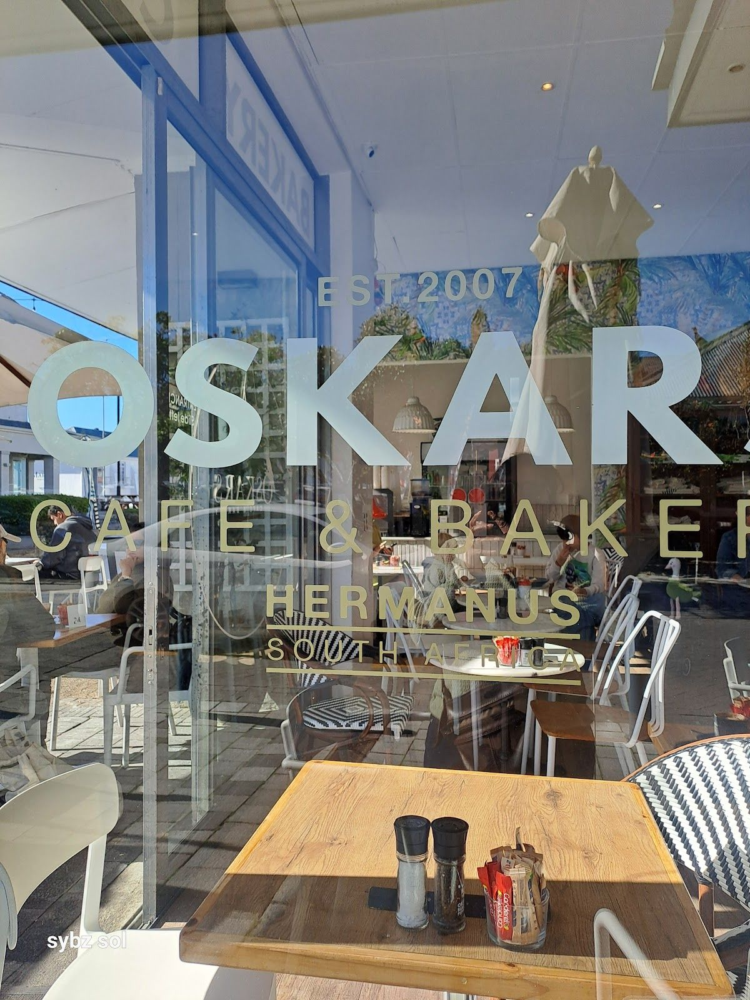

Welcome to Oskars Bakery, where we bring a touch of warmth and deliciousness to Hermanus. Nestled in the heart of this vibrant coastal town, our bakery is more than just a place to grab a bite—it's a community hub where locals and visitors alike come together to enjoy a moment of serenity and delightful cuisine.
At Oskars, we pride ourselves on our commitment to quality and freshness. Every item in our bakery is lovingly crafted from scratch, using only the finest ingredients. Our menu is a reflection of our passion for soul food, offering a variety of baked goods that are both comforting and nourishing. We believe in creating a space where everyone feels welcomed and cherished.
Our mission is simple: to provide an amazing atmosphere and very good food in a beautiful place. We are dedicated to serving the local community and all those who pass through Hermanus. Trust, quality, and warmth are the pillars of our service, and we aim to make every visit a memorable one for our guests.
At Oskars Bakery, we offer a delightful selection of freshly baked goods that cater to all tastes. Our offerings are crafted with love and attention to detail, ensuring a satisfying experience for every customer.
Indulge in our fresh, tasty baked goods—truly soul food that warms the heart and delights the palate. From croissants to artisanal breads, we have something for everyone.
Here is what our clients say about us.
"A hustling coffee shop in central Hermanus. We were on a weekend away and googled pet friendly coffee shops. The weather was great, and we sat outside. You have to order inside, they give you a number and wait in your order. We had breakfast croissants, which was delicious. The coffee was great. The lady behind the counter seemed a bit harried, but she managed a smile when I joked with her. The delivery was prompt and a really nice guy. All in all a delightful experience. Thank you"— Sybz Solomons, ⭐⭐⭐⭐
"What a lovely breakfast spot with amazing gluten free options! Great coffee and yummy breakfast with very kind and friendly staff."— Chantelle Houareau, ⭐⭐⭐⭐⭐
"Great location, service, and food. Although when I asked the woman who was attending how sweet that particular cake would be, she immediately told me she didn't know, never tried it. Does this place allow their employees to try their food? Average price for the same style bakery. Laptop working is not permitted, so forget about working there."— Evelyn Laitz, ⭐⭐⭐⭐⭐
"The food is delicious but the coffee is not that good it's about high roasted"— Thuraya Al Harthy, ⭐⭐⭐⭐
"I have never been one to “order and the counter” when eating at a restaurant, so…. I must mention that the service was fast, and the food was tasty! The location is also good for a bite when doing other shopping."— Richard Stone, ⭐⭐⭐⭐




We'd love to hear from you — reach out to us anytime.